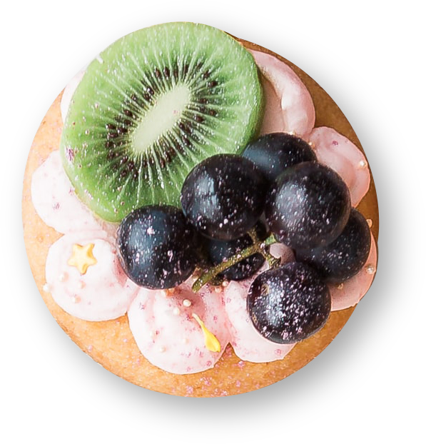

<!DOCTYPE html>
<html lang="zh">

<head>
    <meta charset="UTF-8">
    <meta name="viewport" content="width=device-width, initial-scale=1.0">
    <title>輪播測試</title>

    <link rel="stylesheet" type="text/css" href="//cdn.jsdelivr.net/npm/slick-carousel@1.8.1/slick/slick.css" />
    <link rel="stylesheet" type="text/css" href="//cdn.jsdelivr.net/npm/slick-carousel@1.8.1/slick/slick-theme.css" />

</head>

<body>
    <div id="slider">
        <!-- 
        
        
        
         -->

    </div>


    <!-- jQuery CDN   -->
    <script src="https://ajax.googleapis.com/ajax/libs/jquery/3.5.1/jquery.min.js"></script>
    <!--  輪播CDN  -->
    <script type="text/javascript" src="//cdn.jsdelivr.net/npm/slick-carousel@1.8.1/slick/slick.min.js"></script>


    <!-- <script>
        $("#slider").slick({

        });
    </script> -->


</body>

</html>